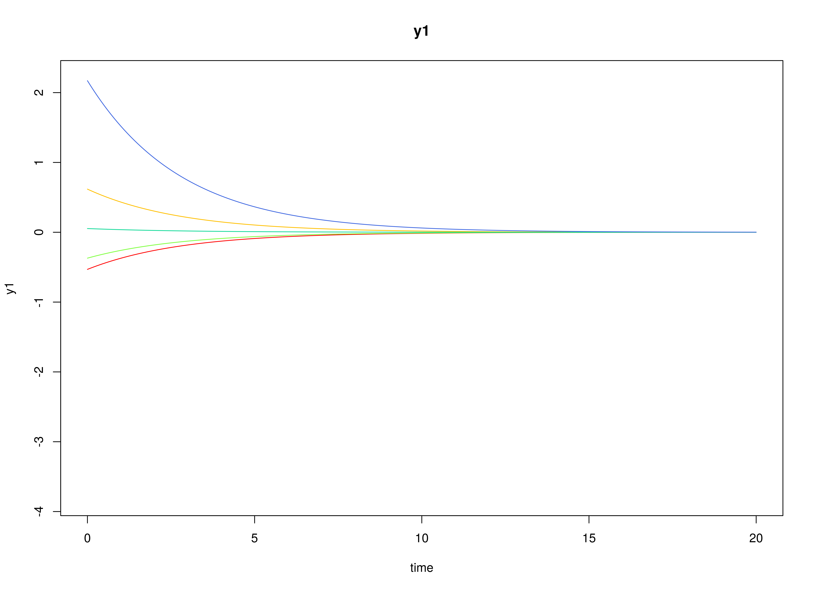
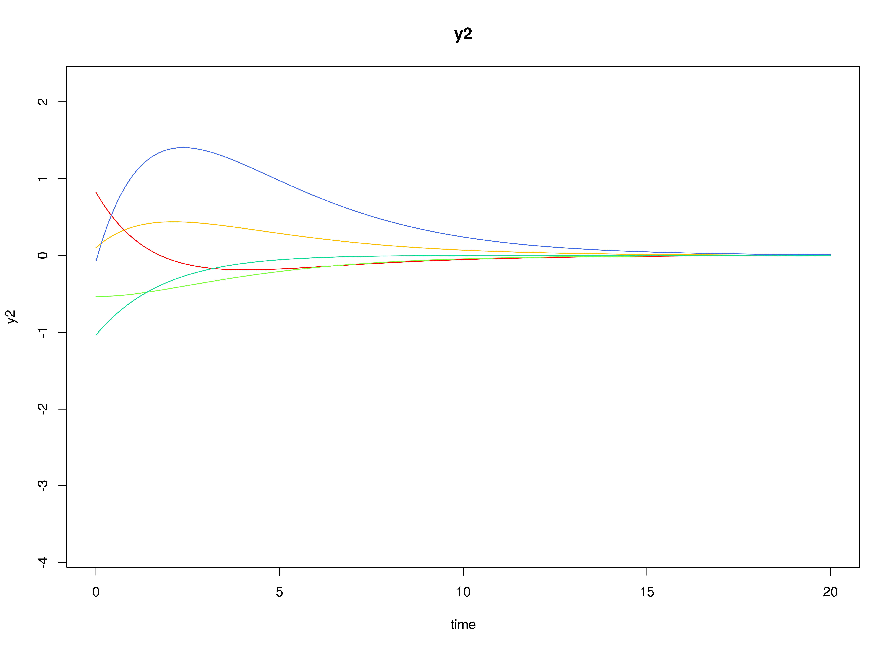
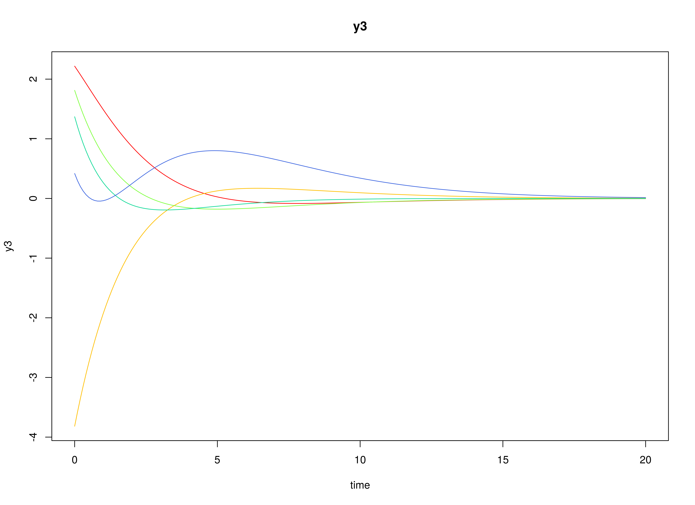

Fit the Continuous-Time Vector Autoregressive Model
Ivan Jacob Agaloos Pesigan
2024-07-08
Source:vignettes/fit-ct-var.Rmd
fit-ct-var.RmdModel
The measurement model is given by \[\begin{equation} \mathbf{y}_{i, t} = \boldsymbol{\nu} + \boldsymbol{\Lambda} \boldsymbol{\eta}_{i, t} + \boldsymbol{\varepsilon}_{i, t}, \quad \mathrm{with} \quad \boldsymbol{\varepsilon}_{i, t} \sim \mathcal{N} \left( \mathbf{0}, \boldsymbol{\Theta} \right) \end{equation}\] where \(\mathbf{y}_{i, t}\), \(\boldsymbol{\eta}_{i, t}\), and \(\boldsymbol{\varepsilon}_{i, t}\) are random variables and \(\boldsymbol{\nu}\), \(\boldsymbol{\Lambda}\), and \(\boldsymbol{\Theta}\) are model parameters. \(\mathbf{y}_{i, t}\) represents a vector of observed random variables, \(\boldsymbol{\eta}_{i, t}\) a vector of latent random variables, and \(\boldsymbol{\varepsilon}_{i, t}\) a vector of random measurement errors, at time \(t\) and individual \(i\). \(\boldsymbol{\nu}\) denotes a vector of intercepts, \(\boldsymbol{\Lambda}\) a matrix of factor loadings, and \(\boldsymbol{\Theta}\) the covariance matrix of \(\boldsymbol{\varepsilon}\).
An alternative representation of the measurement error is given by \[\begin{equation} \boldsymbol{\varepsilon}_{i, t} = \boldsymbol{\Theta}^{\frac{1}{2}} \mathbf{z}_{i, t}, \quad \mathrm{with} \quad \mathbf{z}_{i, t} \sim \mathcal{N} \left( \mathbf{0}, \mathbf{I} \right) \end{equation}\] where \(\mathbf{z}_{i, t}\) is a vector of independent standard normal random variables and \(\left( \boldsymbol{\Theta}^{\frac{1}{2}} \right) \left( \boldsymbol{\Theta}^{\frac{1}{2}} \right)^{\prime} = \boldsymbol{\Theta}\) .
The dynamic structure is given by \[\begin{equation} \mathrm{d} \boldsymbol{\eta}_{i, t} = \boldsymbol{\Phi} \left( \boldsymbol{\eta}_{i, t} - \boldsymbol{\mu} \right) \mathrm{d}t + \boldsymbol{\Sigma}^{\frac{1}{2}} \mathrm{d} \mathbf{W}_{i, t} \end{equation}\] where \(\boldsymbol{\mu}\) is the long-term mean or equilibrium level, \(\boldsymbol{\Phi}\) is the rate of mean reversion, determining how quickly the variable returns to its mean, \(\boldsymbol{\Sigma}\) is the matrix of volatility or randomness in the process, and \(\mathrm{d}\boldsymbol{W}\) is a Wiener process or Brownian motion, which represents random fluctuations.
Data Generation
Notation
Let \(t = 1000\) be the number of time points and \(n = 100\) be the number of individuals.
Let the measurement model intecept vector \(\boldsymbol{\nu}\) be given by
\[\begin{equation} \boldsymbol{\nu} = \left( \begin{array}{c} 0 \\ 0 \\ 0 \\ \end{array} \right) . \end{equation}\]
Let the factor loadings matrix \(\boldsymbol{\Lambda}\) be given by
\[\begin{equation} \boldsymbol{\Lambda} = \left( \begin{array}{ccc} 1 & 0 & 0 \\ 0 & 1 & 0 \\ 0 & 0 & 1 \\ \end{array} \right) . \end{equation}\]
Let the measurement error covariance matrix \(\boldsymbol{\Theta}\) be given by
\[\begin{equation} \boldsymbol{\Theta} = \left( \begin{array}{ccc} 0 & 0 & 0 \\ 0 & 0 & 0 \\ 0 & 0 & 0 \\ \end{array} \right) . \end{equation}\]
Let the initial condition \(\boldsymbol{\eta}_{0}\) be given by
\[\begin{equation} \boldsymbol{\eta}_{0} \sim \mathcal{N} \left( \boldsymbol{\mu}_{\boldsymbol{\eta} \mid 0}, \boldsymbol{\Sigma}_{\boldsymbol{\eta} \mid 0} \right) \end{equation}\]
\[\begin{equation} \boldsymbol{\mu}_{\boldsymbol{\eta} \mid 0} = \left( \begin{array}{c} 0 \\ 0 \\ 0 \\ \end{array} \right) \end{equation}\]
\[\begin{equation} \boldsymbol{\Sigma}_{\boldsymbol{\eta} \mid 0} = \left( \begin{array}{ccc} 1 & 0 & 0 \\ 0 & 1 & 0 \\ 0 & 0 & 1 \\ \end{array} \right) . \end{equation}\]
Let the long-term mean vector \(\boldsymbol{\mu}\) be given by
\[\begin{equation} \boldsymbol{\mu} = \left( \begin{array}{c} 0 \\ 0 \\ 0 \\ \end{array} \right) . \end{equation}\]
Let the rate of mean reversion matrix \(\boldsymbol{\Phi}\) be given by
\[\begin{equation} \boldsymbol{\Phi} = \left( \begin{array}{ccc} -0.357 & 0 & 0 \\ 0.771 & -0.511 & 0 \\ -0.45 & 0.729 & -0.693 \\ \end{array} \right) . \end{equation}\]
Let the dynamic process noise covariance matrix \(\boldsymbol{\Sigma}\) be given by
\[\begin{equation} \boldsymbol{\Sigma} = \left( \begin{array}{ccc} 0.1 & 0 & 0 \\ 0 & 0.1 & 0 \\ 0 & 0 & 0.1 \\ \end{array} \right) . \end{equation}\]
Let \(\Delta t = 0.1\).
R Function Arguments
n
#> [1] 100
time
#> [1] 1000
delta_t
#> [1] 0.1
mu0
#> [1] 0 0 0
sigma0
#> [,1] [,2] [,3]
#> [1,] 1 0 0
#> [2,] 0 1 0
#> [3,] 0 0 1
mu
#> [1] 0 0 0
phi
#> [,1] [,2] [,3]
#> [1,] -0.357 0.000 0.000
#> [2,] 0.771 -0.511 0.000
#> [3,] -0.450 0.729 -0.693
sigma
#> [,1] [,2] [,3]
#> [1,] 0.1 0.0 0.0
#> [2,] 0.0 0.1 0.0
#> [3,] 0.0 0.0 0.1
nu
#> [1] 0 0 0
lambda
#> [,1] [,2] [,3]
#> [1,] 1 0 0
#> [2,] 0 1 0
#> [3,] 0 0 1
theta
#> [,1] [,2] [,3]
#> [1,] 0 0 0
#> [2,] 0 0 0
#> [3,] 0 0 0Visualizing the Dynamics Without Measurement Error and Process Noise (n = 5 with Different Initial Condition)

Using the SimSSMOUFixed Function from the
simStateSpace Package to Simulate Data
library(simStateSpace)
sim <- SimSSMOUFixed(
n = n,
time = time,
delta_t = delta_t,
mu0 = mu0,
sigma0_l = sigma0_l,
mu = mu,
phi = phi,
sigma_l = sigma_l,
nu = nu,
lambda = lambda,
theta_l = theta_l,
type = 0
)
data <- as.data.frame(sim)
head(data)
#> id time y1 y2 y3
#> 1 1 0.0 -0.3643096 -0.6026342 0.9065540
#> 2 1 0.1 -0.3256180 -0.5022615 0.8677814
#> 3 1 0.2 -0.2296496 -0.3203675 0.8569315
#> 4 1 0.3 -0.2413114 -0.3622560 0.7848573
#> 5 1 0.4 -0.3358543 -0.2430579 0.6294530
#> 6 1 0.5 -0.2806468 -0.2063894 0.5806752
plot(sim)


Model Fitting
The FitCTVARMx function fits a DT-VAR model on each
individual \(i\).
library(fitCTVARMx)
fit <- FitCTVARMx(
data = data,
observed = paste0("y", seq_len(k)),
id = "id",
time = "time",
ncores = parallel::detectCores()
)
#> Running CTVAR with 12 parameters
#>
#> Beginning initial fit attempt
#> Running CTVAR with 12 parameters
#>
#> Lowest minimum so far: -543716.980131128
#>
#> Solution found#>
#> Solution found! Final fit=-543716.98 (started at -524291.52) (1 attempt(s): 1 valid, 0 errors)
#> Start values from best fit:
#> -0.336259079122471,0.770287067798403,-0.464190065239356,0.00205658765648727,-0.521492461088462,0.735878240731034,-0.0106374506388174,0.0129009602154161,-0.697095884475648,0.0994158716609205,0.100737065910388,0.10023245133394
fit
#> Summary of CTVAR
#>
#> free parameters:
#> name matrix row col Estimate Std.Error A
#> 1 phi_11 CTVAR_1.phi eta1 eta1 -0.336259079 0.0112876840
#> 2 phi_21 CTVAR_1.phi eta2 eta1 0.770287068 0.0112334809
#> 3 phi_31 CTVAR_1.phi eta3 eta1 -0.464190065 0.0111528376
#> 4 phi_12 CTVAR_1.phi eta1 eta2 0.002056588 0.0097320464
#> 5 phi_22 CTVAR_1.phi eta2 eta2 -0.521492461 0.0098184506
#> 6 phi_32 CTVAR_1.phi eta3 eta2 0.735878241 0.0097176408
#> 7 phi_13 CTVAR_1.phi eta1 eta3 -0.010637451 0.0089962429
#> 8 phi_23 CTVAR_1.phi eta2 eta3 0.012900960 0.0090682626
#> 9 phi_33 CTVAR_1.phi eta3 eta3 -0.697095884 0.0090833222
#> 10 sigma_11 CTVAR_1.sigma eta1 eta1 0.099415872 0.0004590553
#> 11 sigma_22 CTVAR_1.sigma eta2 eta2 0.100737066 0.0004614320
#> 12 sigma_33 CTVAR_1.sigma eta3 eta3 0.100232451 0.0004571693
#> lbound ubound
#> 1 2.2250738585072e-308
#> 2
#> 3
#> 4
#> 5 2.2250738585072e-308
#> 6
#> 7
#> 8
#> 9 2.2250738585072e-308
#> 10 2.2250738585072e-308
#> 11 2.2250738585072e-308
#> 12 2.2250738585072e-308
#>
#> Model Statistics:
#> | Parameters | Degrees of Freedom | Fit (-2lnL units)
#> Model: 12 299988 -543717
#> Saturated: NA NA NA
#> Independence: NA NA NA
#> Number of observations/statistics: 1e+05/3e+05
#>
#> Information Criteria:
#> | df Penalty | Parameters Penalty | Sample-Size Adjusted
#> AIC: -1143693 -543693.0 -543693
#> BIC: -3997456 -543578.8 -543617
#> CFI: NA
#> TLI: 1 (also known as NNFI)
#> RMSEA: 0 [95% CI (NA, NA)]
#> Prob(RMSEA <= 0.05): NA
#> To get additional fit indices, see help(mxRefModels)
#> timestamp: 2024-07-08 03:30:00
#> Wall clock time: 148.2436 secs
#> optimizer: SLSQP
#> OpenMx version number: 2.21.11
#> Need help? See help(mxSummary)